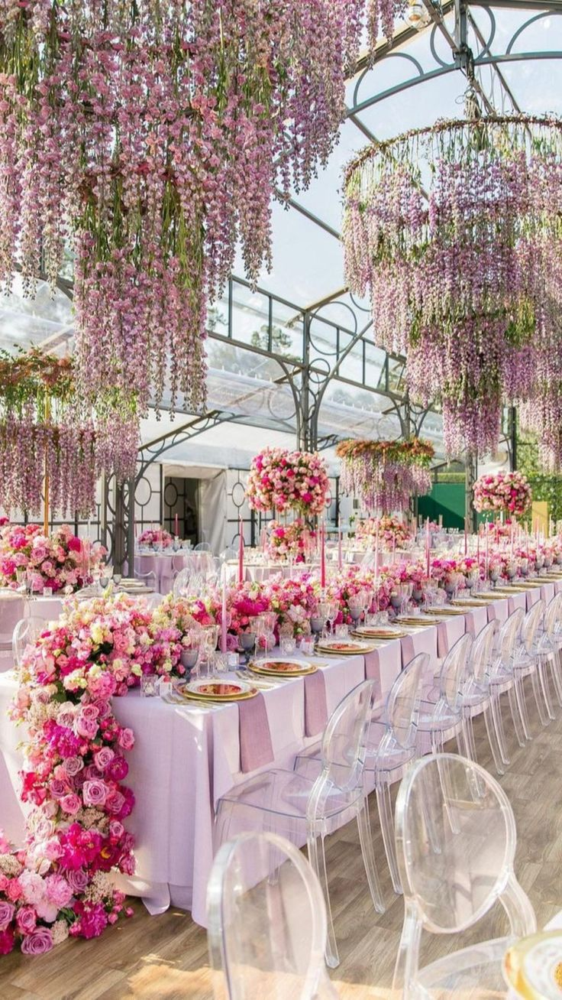

Spolupracujeme s rôznymi firmami, ktoré sa venujú výzdobám rôznych udalostí.

Kvety sú klasickým prvkom výzdoby pre rôzne príležitosti, ako sú svadby, oslavy
narodenín, firemné akcie a podobne. Kvetinová výzdoba môže zahŕňať kvetinové aranžmány,
kytice, dekorácie stolov a priestorov.
Balóny sú populárnym prvkov výzdoby pre rôzne oslavy, vrátane narodenín, svadieb, baby
showerov a podujatí pre deti. Balóny môžu byť použité na vytvorenie oblakov, oblúkov, stĺpov, čísiel a
písmen.
Správne osvetlenie môže vytvoriť nádhernú atmosféru a zmeniť náladu miestnosti. Osvetlenie môže
zahŕňať sviečky, svetelné reťaze, LED svetlá a farebné svetelné efekty.
Tématická výzdoba sa prispôsobuje téme alebo štýlu konkrétnej udalosti. Napríklad morská téma
pre svadbu alebo tropická téma pre letnú party.
Okrem kvetov a balónov sa dajú použiť aj ďalšie dekoračné prvky, ako sú svadobné závesy, stuhy,
stolové centrá, obrusy, podložky na stôl, ozdobné vankúše a ďalšie detaily.
Personalizovaná výzdoba zahŕňa vytváranie vlastných dekorácií a prvkov, ktoré odrážajú osobnosť alebo záujmy
hostiteľa alebo oslávenca. Môže to zahŕňať vlastnoručne vytvorené dekorácie, fotografií s osobnými zábermi alebo
vlastnoručne vyrobené darčeky.
Zisti viac